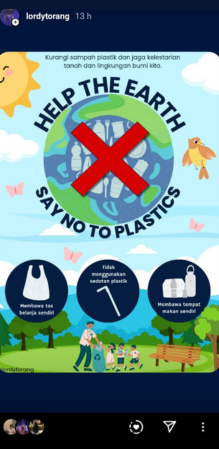
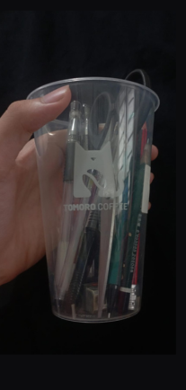
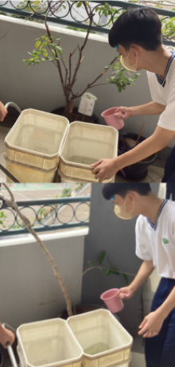
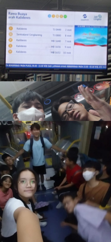
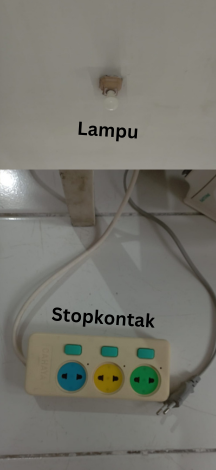
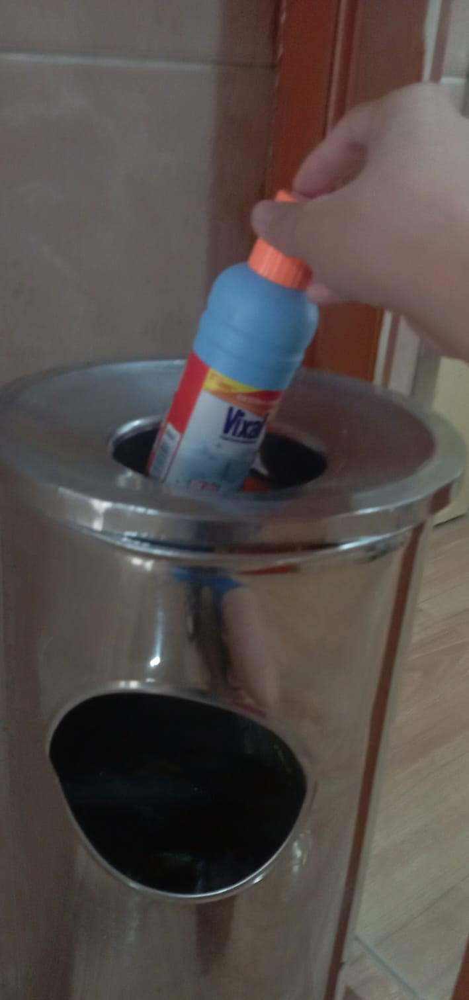

Latar Belakang
Oleh karena itu, upaya untuk mengurangi emisi gas rumah kaca dan mengatasi pemanasan global menjadi semakin mendesak bagi seluruh masyarakat global. Sebagai pelajar, saya harus melakukan sesuatu untuk menyelamatkan bumi kita yang satu-satunya.
.png)
.png)
.png)
.png)
Pembersihan Sampah di Ancol
Dengan membersihkan sampah-sampah di Ancol, saya berharap dapat membantu mengurangi sampah yang beredar di Pantai Ancol dan sekaligus memberi pesan kepada warga sekitar untuk membuang sampah pada tempatnya.
Aksi Nyata Lainnya by Lordy

Mengunggah Poster
Saya membuat dan mengunggah poster ke Instagram untuk mendorong kesadaran teman-teman mengurangi penggunaan plastik.

Mendaur Ulang
Saya mendaur ulang gelas plastik dan membuatnya menjadi tempat wadah sederhana untuk peletakkan pensil dan alat tulis lainnya.

Menyiram Tanaman
Saya menyiram tanaman di sekolah. Tanaman menyerap CO2 selama fotosintesis dan mengurangi kadar gas rumah kaca di atmosfer.

Menggunakan Transportasi Umum
Saya mengurangi penggunaan transportasi pribadi. Dengan itu, saya mengurangi polusi udara dan mengeluarkan biaya yang lebih kecil.

Menghemat Pemakaian Listrik
Saya menghemat pemakaian listrik dengan cara sederhana seperti mematikan stopkontak atau lampu jika sedang tidak digunakan.

Membuang Sampah Pada Tempatnya
Saya membuang sampah pada tempatnya untuk mencegah sampah saya mencemari lingkungan dan menyebabkan tumpukan sampah atau banjir.